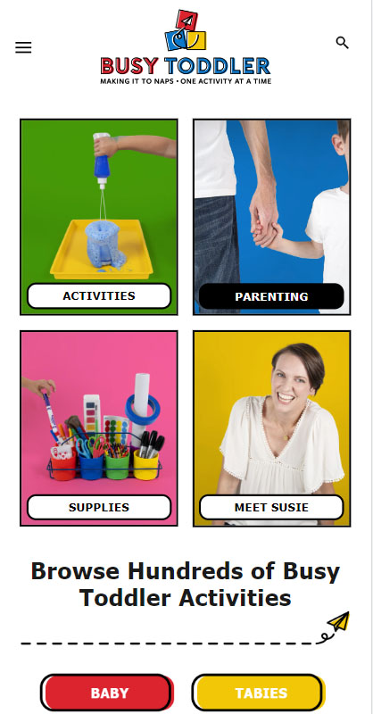

Contrast
Busy Toddler
Busytoddler.com

As we learned : "Choosing a color palette appropriate for your brand enables you to impact your customers' behavior toward it".
The website is designed for parents of toddlers, bright colors are often used for children as they prefer saturated colors.
The contrast between the colors are separating the four sections, and it attracts the eyes for both the logo and the links.
Hick’s Law
Tesla
Tesla.com
Hick’s Law says that : "with every additional choice increases the time required to take a decision."
One of the best website to illustrate this is Tesla's. This website for cars have only one car with
two buttons, either to order or to have a demo. When you scroll down, another car appear, only one at a time.
Alignment
Booking
Booking.com

The elements on the page are aligned with one another, especially all the information you need to write as input to make a reservation, and the border makes it even more visible. It improves the readability and
thus overall user experience on the page.